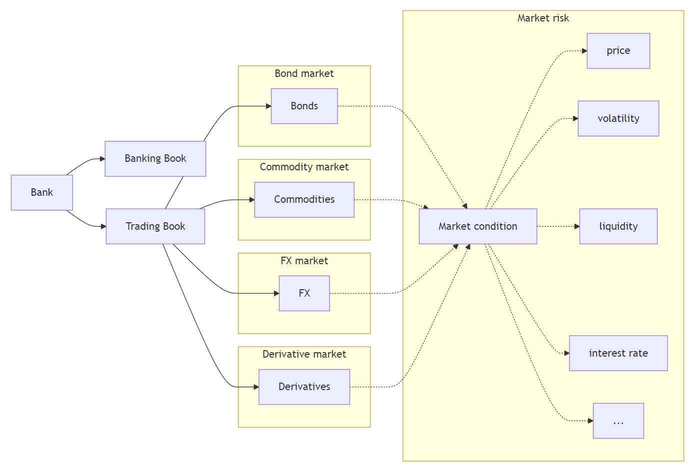
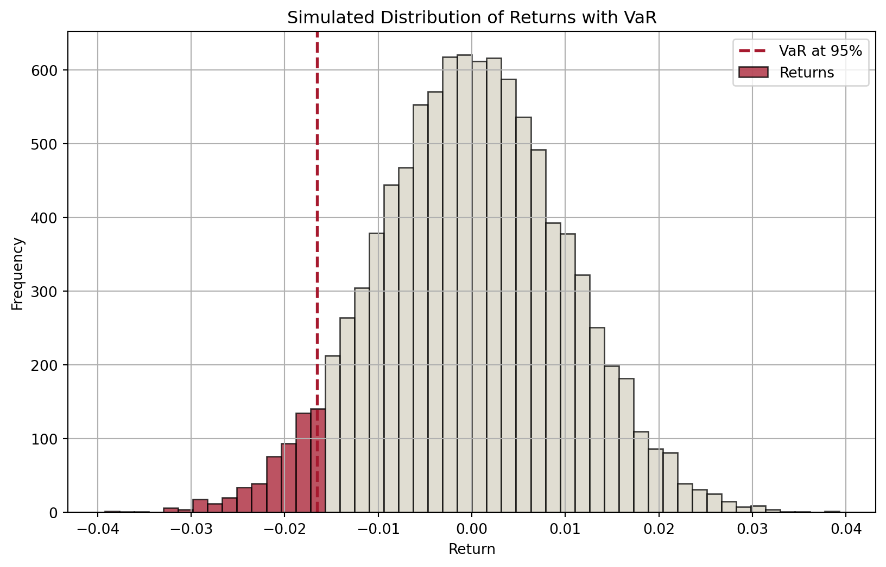
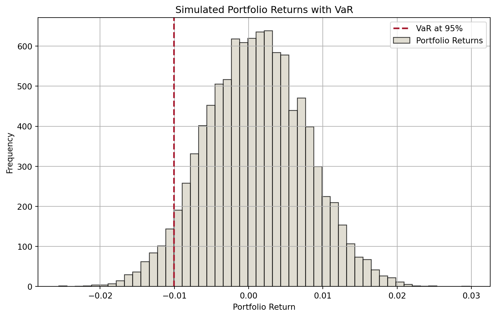
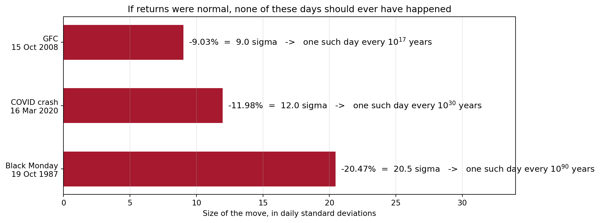
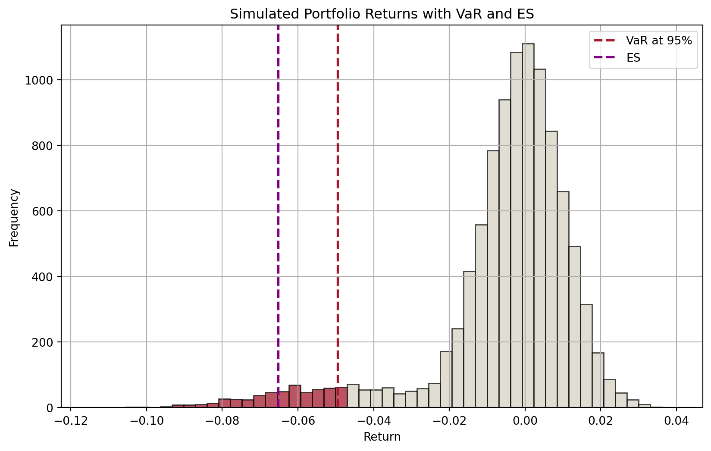

Every afternoon, one page lands on the chairman’s desk at 4:15pm.
Not a stack of spreadsheets. One number.
“At close of business each day tell me what the market risks are across all businesses and locations.”
Sir Dennis Weatherstone, chairman of J.P. Morgan & Co.
The problem was scale. J.P. Morgan ran 14 trading locations with 120 independent trading units dealing in bonds, currencies, commodities, derivatives and equities. Every desk measured its own risk, in its own units. None of it added up.
Weatherstone wanted all of it collapsed into a single sentence a human being could act on:
“We are X% confident we will not lose more than $Y by tomorrow.”
That sentence is Value at Risk. This lecture is about how to fill in the blanks, and about what the number still misses.
The methodology J.P. Morgan built for this became RiskMetrics, released publicly in October 1994, spun out as a separate company in 1998 and eventually bought by MSCI. The bank gave away the model that now underpins market risk regulation worldwide.
Introduction
Last week, we discussed interest rate risk: changes in interest rates could affect an FI’s income and net worth.
Interest rate changes affect mostly the banking book.
The trading book is exposed to market risk.
Assets
Liabilities
Banking book
Cash
Deposits
Loans
Other liabilities
Other assets
Capital
Trading book
Bonds (long)
Bonds (short)
Commodities (long)
Commodities (short)
FX (long)
FX (short)
Equities (long)
Equities (short)
Mortgage-backed securities (long)
Derivatives1 (long)
Derivatives (short)
Market Risk
Market risk is uncertainty of an FI’s earnings on its trading portfolio caused by changes, particularly extreme changes, in market conditions such as the price of an asset, interest rates, market volatility, and market liquidity.
Roadmap
One question drives this lecture: “How much could the trading book lose on a bad day?”
Value at Risk (VaR): what the number means, before any mathematics.
Three ways to compute it: RiskMetrics (variance-covariance), historic simulation, Monte Carlo.
Aggregating across asset classes: why correlations matter.
When VaR fails: fat tails and a short history of expensive surprises.
Expected Shortfall (ES): what VaR misses in the tail, and why regulators switched.
Backtesting: how supervisors check whether a model is telling the truth.
The BIS regulatory models: standardised framework vs internal model approach (FRTB).
A note on the mathematics
This week has more notation than any other in the unit. Do not let it intimidate you. Every formula here is doing one of two simple jobs: finding a cut-off point on a distribution, or taking an average. If you can read a weather forecast, you can read a VaR report. We will build the intuition first and add the symbols afterwards.
Introduction (cont’d)
The trading book holds assets, liabilities and derivatives that are actively traded, and are therefore exposed to whatever those markets do next.

The rest of the lecture answers two questions about that book:
What is the worst loss we should expect not to exceed, at a given confidence level, over a given horizon? That is Value at Risk.
When we do exceed it, how bad is it? That is Expected Shortfall.
Value at Risk (VaR)
VaR without the mathematics
Start with something you already read every day: the weather forecast.
“There is a 10% chance of rain tomorrow.”
That sentence does not promise sunshine. It says that on days that look like tomorrow, it rains about one time in ten. It is a statement about how often, not about what will happen.
VaR is exactly the same kind of statement, about money instead of rain:
The one sentence to memorise
“We are 99% confident we will not lose more than $15,000 on this position tomorrow.”
Equivalently: on roughly one trading day in a hundred, we expect to lose more than $15,000.
Three ingredients, or the number is meaningless
A VaR figure is only interpretable if you know all three of these:
Ingredient
Example
If you change it
Confidence level
95%, 99%, 97.5%
Higher confidence pushes the cut-off further into the tail, so VaR rises
Time horizon
1 day, 10 days
Longer horizon means more time for things to move, so VaR rises
Portfolio
which desks, which positions
Different positions, different risk
Warning
“Our VaR is $40 million” is not a sentence. “Our one-day 99% VaR is $40 million” is.
Whenever you meet a VaR number in a bank’s annual report, find those three ingredients first. They are always disclosed, and they are not standard across banks, which makes naive comparisons misleading.
Check your understanding
A bank reports: “One-day 99% VaR: A$40 million.” Which statements are correct?
“The bank will never lose more than $40m in a day.”No. VaR is a threshold that is sometimes crossed, not a maximum.
“The bank expects to lose $40m tomorrow.”No. On a typical day the outcome is a small gain or a small loss. $40m is a rare bad case, not a forecast.
“On about one day in a hundred, the bank loses more than $40m.”Yes. That is precisely the claim.
“On the days it does lose more than $40m, it loses about $40m.”Unknown. It could be $41m. It could be $4 billion. VaR is silent about this.
Hold on to that last one. It is the single most dangerous gap in VaR, and the reason Expected Shortfall exists. We return to it later in the lecture.
Concept of VaR
Suppose we know the distribution of an asset’s returns over a specific period (in the future), then for a given confidence level \(c\in[0,1]\) (e.g., \(c=0.95\)), we can partition the distribution into two parts: one (in red) that represents a proportion of \((1-c)\) of the distribution and the other (in blue) accounting the remaining \(c\) proportion.
Code
import numpy as npimport matplotlib.pyplot as plt# Set seed for reproducibilitynp.random.seed(42)# Parametersmu =0# Mean of returnssigma =0.01# Standard deviation of returnsn =10000# Number of simulationsconfidence_level =0.95# Simulate returnsreturns = np.random.normal(mu, sigma, n)# Calculate VaRVaR = np.percentile(returns, (1- confidence_level) *100)# Plot histogram with different colors for bars below and above VaRplt.figure(figsize=(10, 6))# Histogram datan, bins, patches = plt.hist(returns, bins=50, alpha=0.75, edgecolor="black")# Change color of barsfor i inrange(len(patches)):if bins[i] < VaR: patches[i].set_facecolor("#A6192E")else: patches[i].set_facecolor("#D6D2C4")# Add VaR lineplt.axvline(VaR, color="#A6192E", linestyle="dashed", linewidth=2)plt.title("Simulated Distribution of Returns with VaR")plt.xlabel("Return")plt.ylabel("Frequency")plt.legend(["VaR at 95%", "Returns"])plt.grid(True)plt.show()

Figure 1: Distribution of expected returns and VaR
Therefore, the cutoff value of returns that separates the two parts defines:
a minimum return that we are confident 95% of the time, or
a maximum loss that we are confident 95% of the time.
Interactive: where does the line sit?
Drag the confidence level and watch the cut-off move. The red region is the set of days we are choosing to call “bad”.
Notice: raising confidence from 95% to 99% does not double the VaR. The tail thins out quickly under a normal distribution.
Code
z0 = {let seed =987654321;const rand = () => { seed = (1103515245* seed +12345) %2147483648;return (seed +0.5) /2147483648; };const out = [];for (let i =0; i <20000; i++) {const u1 =rand(), u2 =rand(); out.push(Math.sqrt(-2*Math.log(u1)) *Math.cos(2*Math.PI* u2)); }return out;}// A second fixed stream of uniforms, used later for the fat-tail demo.u0 = {let seed =24680135;const rand = () => { seed = (1103515245* seed +12345) %2147483648;return (seed +0.5) /2147483648; };returnArray.from({length:20000}, () =>rand());}retA = z0.map(z => z * volA /100)sortedA = retA.slice().sort((a, b) => a - b)varA = sortedA[Math.floor((1- confA) * sortedA.length)]html`<div style="font-size:1.15em; margin-bottom:6px;"> <b>${(confA*100).toFixed(1)}%</b> one-day VaR = <b style="color:#A6192E">$${(-varA * posA).toFixed(2)}m</b> <span style="color:#666">(${(-varA*100).toFixed(2)}% of the position)</span></div>`
Code
Plot.plot({width:640,height:300,marginLeft:50,marginBottom:40,x: {label:"Daily return (%)",domain: [-6,6]},y: {label:"Number of days"},marks: [ Plot.rectY(retA, Plot.binX({y:"count"}, {x: d => d *100,thresholds:90,fill: d => d <= varA ?"#A6192E":"#D6D2C4"})), Plot.ruleX([varA *100], {stroke:"#A6192E",strokeWidth:2}), Plot.ruleY([0]) ]})
Models for computing VaR
Over the years, many models have been developed to compute VaR.
This is because we do not have the return distribution of trading portfolio over a specific period in the future.
If we do, then VaR is unambiguous.
Therefore, different assumptions lead to different models and approaches. We are interested in three in this course:
RiskMetrics (variance-covariance approach)
Historic or back simulation
Monte Carlo simulation
VaR: RiskMetrics
Back to Weatherstone’s 4:15 report. To produce that single number, J.P. Morgan needed a method that could be applied to a bond desk, an FX desk and an equity desk alike, and then aggregated. That method is RiskMetrics.
Its central assumption is the one that makes everything tractable:
The RiskMetrics assumption
Daily changes in market prices, yields and exchange rates are normally distributed with mean zero.
Once you accept that, a single number, the standard deviation \(\sigma\), describes the entire distribution. The cut-off is then just a multiple of \(\sigma\):
95% confidence: \(1.65\sigma\)
99% confidence: \(2.33\sigma\)
This is a genuine bargain: enormous simplification for one assumption. It is also, as the second half of this lecture shows, exactly where the model breaks.
VaR: RiskMetrics (cont’d)
In a nutshell, we are concerned about the market risk exposure on a daily basis. Market risk exposure over longer periods, under some assumptions, can be viewed as a simple transformation from the daily exposure.
The market risk is measured by the daily earnings at risk (DEAR): \[
\text{DEAR} = \left(\text{dollar market value of the position}\right) \times \left(\text{price sensitivity of the position}\right) \times \left(\text{potential adverse move}\right)
\]
Since price sensitivity multiplied by adverse move measures the degree of price volatility of an asset, we can write this equation as: \[
\text{DEAR} = \left(\text{dollar market value of the position}\right) \times \left(\text{price volatility}\right)
\]
Dear DEAR and VaR
DEAR is basically 1-day dollar VaR in the context of RiskMetrics model.
If we assume that shocks are independent, daily volatility is approximately constant, and that the FI holds this asset for \(N\) number of days, then the \(N\)-day VaR is related to DEAR by: \[
N\text{-day VaR} = \left(\text{DEAR}\right) \times \sqrt{N}
\]
VaR: RiskMetrics for fixed-income securities
Suppose an FI holds a $1 million position in 7-year zero-coupon bonds (face value $1,631,483, yield 7.243%).
Sensitivity. From last week, modified duration: \[
MD = \frac{D}{1+R} = \frac{7}{1.07243} = 6.527
\]
Adverse move. Bond prices fall when yields rise, so we need the largest upward yield move we expect at 99% confidence. Assume daily yield changes are normal with mean 0 and \(\sigma = 10\) bps: \[
2.33 \times 10\text{bps} = 23.3\text{bps} = 0.00233
\]
VaR: RiskMetrics for fixed-income securities (cont’d)
“On the one day in a hundred that goes badly for us, we expect to lose about $15,208 on this bond position.”
Note what each input did: the duration converted a yield move into a price move, and the 2.33 converted a confidence level into a number of standard deviations. Every DEAR calculation in this lecture has exactly this shape.
The bond example did the hard work. FX and equities use the identical three-step recipe, and are actually simpler, because there is no duration to worry about: the position is the exposure.
FX: €800,000 spot euros
At $1.25/€, that is a $1m position. Daily FX volatility \(\sigma = 56.5\) bps.
Why we can use the market’s volatility for equities
From CAPM, a stock’s total risk splits into systematic and idiosyncratic parts: \[\sigma^2_{i} = \beta^2_{i}\sigma^2_{m} + \sigma^2_{e i}\] In a well-diversified portfolio the idiosyncratic term washes out, leaving market risk. If the portfolio tracks the index, \(\beta = 1\) and the portfolio’s volatility is\(\sigma_m\). For a portfolio with \(\beta \neq 1\), scale by beta.
VaR: portfolio aggregation
We now have three separate DEARs:
Position
DEAR
7-year zero-coupon bonds
$15,207.91
Euro spot
$13,164
Equities
$46,600
Naive total
$74,972
The manager needs one number. Can we simply add them?
Important
No. Adding DEARs assumes every position has its worst day simultaneously. That is not how markets behave.
This is where the other half of “variance-covariance” finally earns its name: so far we have used only the variances. The covariances are what stop us adding.
$56,442 against a naive $74,972. The $18,530 difference is the diversification benefit, and it exists only because the three markets do not all crash on the same day.
Interactive: how much does diversification buy you?
The three desks have DEARs of $15,208 (bonds), $13,164 (FX) and $46,600 (equities). Naively added, that is $74,972. Drag the correlations and watch the true aggregate move.
Push all three to +1 and the aggregate equals the naive sum: with everything moving together, there is no diversification left. That is precisely what happens in a crisis.
Diversification benefits are estimated from historical correlations, and historical correlations are measured mostly in calm markets. In a crisis, correlations move toward one and the benefit you were counting on evaporates at the exact moment you need it. Long-Term Capital Management, two slides from now, is the canonical illustration.
VaR: criticisms against RiskMetrics
RiskMetrics buys its simplicity with one heavy assumption, and pays for it twice.
1. Returns are not normal.
Real return distributions are skewed and, above all, fat-tailed.
The whole of the next section is about what this costs. Hold that thought.
2. The covariances are a practical nightmare.
With \(N\) assets you need \(\frac{N(N-1)}{2}\) pairwise covariances.
A 500-stock equity book alone needs 124,750 of them, before a single bond or currency is added.
Worse, they must be estimated from history, and history is mostly calm periods.
Important
The second problem is inconvenient. The first is dangerous: it is the reason a bank can pass every risk report and still fail.
VaR: historic or back simulation
Many FIs have developed market risk models that employed a historic or back simulation approach.
Essential idea is to revalue current asset portfolio on basis of past actual prices (returns).
Simply put, this approach is to
Collect the past 500 days’ actual prices (returns).
Revalue the asset using the 1% worst case, i.e., the portfolio is revalued as the 5th lowest value out of 500.
The advantages of historic approach are that
it is simple,
it does not require that asset returns be normally distributed, and
it does not require that the correlations or standard deviations of asset returns be calculated.
However,
500 observations is not very many from a statistical standpoint.
Increasing the number of observations by going back further in time is not desirable.
As one goes back further in time, past observations may become decreasingly relevant in predicting VaR in the future.
How to improve?
Could weight recent observations more heavily and go further back.
Could generate additional observations (Monte Carlo simulation)!
VaR: Monte Carlo simulation
Historic simulation is limited to the few hundred days that actually happened. Monte Carlo removes that limit: instead of replaying history, we manufacture as many plausible days as we like.
Three steps:
Generate scenarios. Draw thousands of possible future returns for each asset, consistent with their volatilities and their correlations.
Build portfolio returns. For each scenario, combine the asset returns using the portfolio weights.
Read off VaR. Sort the simulated portfolio returns and take the relevant percentile, exactly as before.
The only technical wrinkle
Step 1 must preserve correlations: if bonds and equities move together in reality, they must move together in the simulation. The standard trick is Cholesky decomposition, which factorises the covariance matrix into \(\Sigma = LL'\) and uses \(L\) to convert independent random draws into correlated ones.
You do not need to perform this by hand. numpy.linalg.cholesky is one line, and it appears in the code on the next slide. What matters is why it is there: without it, your simulated world would have no correlations at all, and the portfolio would look far safer than it is.
import numpy as npimport matplotlib.pyplot as plt# Parametersnp.random.seed(42)n_assets =3n_scenarios =10000confidence_level =0.95# Mean returns and covariance matrix for the assetsmean_returns = np.array([0.001, 0.0012, 0.0008]) # Example mean returnscov_matrix = np.array( [ [0.0001, 0.00002, 0.000015], [0.00002, 0.0001, 0.000025], [0.000015, 0.000025, 0.0001], ]) # Example covariance matrix# Cholesky decomposition of the covariance matrixL = np.linalg.cholesky(cov_matrix)# Generate standard normal random variablesZ = np.random.normal(size=(n_scenarios, n_assets))# Simulate asset returnssimulated_returns = Z @ L.T + mean_returns# Given weightsweights = np.array([0.4, 0.3, 0.3]) # Example weights# Calculate portfolio returnsportfolio_returns = simulated_returns @ weights# Calculate VaRVaR = np.percentile(portfolio_returns, (1- confidence_level) *100)# Plotting the portfolio returns and VaRplt.figure(figsize=(10, 6))plt.hist(portfolio_returns, bins=50, alpha=0.75, color="#D6D2C4", edgecolor="black")plt.axvline(VaR, color="#A6192E", linestyle="dashed", linewidth=2)plt.title("Simulated Portfolio Returns with VaR")plt.xlabel("Portfolio Return")plt.ylabel("Frequency")plt.legend(["VaR at 95%", "Portfolio Returns"])plt.grid(True)plt.show()

Figure 2: Distributions of portfolio returns from Monte Carlo simulation
When VaR fails
The assumption that does the damage
Every model in the previous section needed a distribution. RiskMetrics assumed a normal one, because it is convenient: a single number, \(\sigma\), describes the whole picture.
Real markets are not that polite. Returns have fat tails: extreme days happen far more often than a normal distribution allows.
How much more often? Take three real days on the S&P 500 and ask what a normal distribution with a 1% daily standard deviation would have said about them.

Figure 3: Three real trading days, expressed in standard deviations. A normal distribution treats these as effectively impossible.
The universe is about \(1.4 \times 10^{10}\) years old.
August 2007: the quote that says it all
As the first tremors of the crisis hit, Goldman Sachs CFO David Viniar explained the losses in the firm’s quantitative funds to the Financial Times:
“We were seeing things that were 25-standard deviation moves, several days in a row.”
Read literally, that is absurd. He was not being careless: he was describing the failure of the model, not the strangeness of the market. When your model says the last three days were impossible, the model is what is wrong.
A short history of expensive surprises
Year
Episode
Loss
What the risk model did not capture
1995
Barings Bank (Nick Leeson)
£827m; the bank collapsed and was sold for £1
Unauthorised positions were hidden in an error account and never entered the risk system
1998
Long-Term Capital Management
US$4.6bn; a Fed-organised rescue
Correlations converged to one; positions were far too large to exit
2008
Société Générale (Jérôme Kerviel)
€4.9bn
Fictitious offsetting trades made a huge directional bet look hedged
2012
JPMorgan “London Whale”
over US$6bn
The VaR model itself was replaced with one that reported roughly half the risk
2021
Archegos
about US$10bn across banks (Credit Suisse alone US$5.5bn)
Concentrated, heavily leveraged single-name swap exposures, invisible across counterparties
2022
LME nickel
Trading suspended; executed trades cancelled
Liquidity vanished; the price ran past US$100,000 a tonne
Read the right-hand column again
Almost none of these were failures of arithmetic. They were failures of scope: the risk that mattered was outside the model, whether because it was concealed, because it was assumed away, or because the model was quietly changed until the answer looked acceptable.
A VaR number is only as honest as the positions and assumptions fed into it.
When the model becomes the target
The London Whale deserves a second look, because it is the cautionary tale for everyone who will ever report a risk number rather than compute one.
In January 2012, JPMorgan’s Chief Investment Office adopted a new VaR model for its synthetic credit portfolio. The new model reported roughly half the risk of the old one. The reported VaR fell sharply. The positions did not change.
Within months the same portfolio lost more than US$6 billion, and the bank was later obliged to restate its figures and reinstate the earlier model.
The lesson
A risk model is not merely a measuring instrument. It is also a constraint on the people being measured, and constraints create incentives to game them. Whenever a risk number falls sharply without the positions changing, the first question is not “are we safer?” but “what changed in the model?”
Expected Shortfall (ES)
Why VaR could be misleading
Return to the unanswered question from the start of the lecture.
VaR tells you where the tail begins. It says nothing about what is inside it.
Two banks can report an identical 99% VaR of $40m, while one loses $41m on a bad day and the other loses $400m. VaR cannot tell them apart, because it only ever looks at a single point on the distribution and ignores everything beyond.
The fix
Expected Shortfall (ES), also called conditional VaR: instead of asking where the tail starts, ask what the average loss is once you are in it.
\[
\text{ES} = \text{average of all losses worse than the VaR}
\]
The GFC made this switch unavoidable. Losses fell deep into a fat tail that VaR had declared unremarkable, and regulators discovered that their measure had been describing the door while ignoring the room behind it.
ES: definition
For a given confidence level \(c\) and a continuous probability distribution, ES can be calculated as \[
ES(c) = \frac{1}{1-c}\int_c^1 VaR(u)du
\]
That is, for a confidence level of, say, 95% (i.e., \(c\)), we measure the area under the probability distribution from the 95th to 100th percentile.
Code
import numpy as npimport matplotlib.pyplot as plt# Parametersnp.random.seed(42)n_scenarios =10000confidence_level =0.95# Adjust Distribution: Mixture of normal distributionsmu2, sigma2 =0, 0.01extreme_mu, extreme_sigma =-0.05, 0.02# Create a mixture distribution that has the desired VaRextreme_component = np.random.normal(extreme_mu, extreme_sigma, int(n_scenarios *0.1))normal_component = np.random.normal(mu2, sigma2, int(n_scenarios *0.9))returns = np.concatenate([extreme_component, normal_component])VaR = np.percentile(returns, (1- confidence_level) *100)# Calculate ESES = np.mean(returns[returns <= VaR])# Plot histogramplt.figure(figsize=(10, 6))# Histogram datan, bins, patches = plt.hist(returns, bins=50, alpha=0.75, edgecolor="black")# Highlight bars below VaRfor i inrange(len(patches)):if bins[i] < VaR: patches[i].set_facecolor("#A6192E")else: patches[i].set_facecolor("#D6D2C4")# Add VaR and ES linesplt.axvline(VaR, color="#A6192E", linestyle="dashed", linewidth=2, label="VaR at 95%")plt.axvline(ES, color="purple", linestyle="dashed", linewidth=2, label="ES")plt.title("Simulated Portfolio Returns with VaR and ES")plt.xlabel("Return")plt.ylabel("Frequency")plt.legend()plt.grid(True)plt.show()

Figure 4: Distribution of expected returns and ES
Interactive: the demonstration that matters
Both distributions below have exactly the same standard deviation. Only the shape of the tail changes. Watch what happens to VaR, and then to ES.
Volatility is held constant throughout, so a risk report built on \(\sigma\) alone would notice nothing at all.
Code
retB = {const pExtreme =0.02* fatB;const k =1+7* fatB;const scale =Math.sqrt((1- pExtreme) + pExtreme * k * k);return z0.map((z, i) =>0.01* z * (u0[i] < pExtreme ? k :1) / scale);}sortedB = retB.slice().sort((a, b) => a - b)varB = sortedB[Math.floor((1- confB) * sortedB.length)]esB = {const tail = sortedB.filter(x => x <= varB);return tail.reduce((a, b) => a + b,0) / tail.length;}sdB = {const m = retB.reduce((a, b) => a + b,0) / retB.length;returnMath.sqrt(retB.reduce((a, b) => a + (b - m) **2,0) / retB.length);}html`<table class="table" style="font-size:1.0em; margin-bottom:4px;"> <tr><td>Daily volatility (held fixed)</td> <td style="text-align:right"><b>${(sdB*100).toFixed(2)}%</b></td></tr> <tr><td>${(confB*100).toFixed(1)}% VaR</td> <td style="text-align:right"><b style="color:#A6192E">$${(-varB*posB).toFixed(2)}m</b></td></tr> <tr><td>${(confB*100).toFixed(1)}% Expected Shortfall</td> <td style="text-align:right"><b style="color:#80225F">$${(-esB*posB).toFixed(2)}m</b></td></tr> <tr><td>ES as a multiple of VaR</td> <td style="text-align:right"><b>${(esB/varB).toFixed(2)}x</b></td></tr></table>`
Code
Plot.plot({width:640,height:285,marginLeft:50,marginBottom:40,x: {label:"Daily return (%)",domain: [-8,8]},y: {label:"Number of days"},marks: [ Plot.rectY(retB, Plot.binX({y:"count"}, {x: d => d *100,thresholds:120,fill: d => d <= varB ?"#A6192E":"#D6D2C4"})), Plot.ruleX([varB *100], {stroke:"#A6192E",strokeWidth:2}), Plot.ruleX([esB *100], {stroke:"#80225F",strokeWidth:2,strokeDasharray:"5,3"}), Plot.ruleY([0]) ]})
Solid red line: VaR. Dashed purple line: ES, always further out.
ES: advantages and (potential) problems
ES is the average of losses that occur beyond the VaR level. It provides a better risk assessment by considering the tail of the loss distribution.
In addition, an important advantage of ES over VaR is that ES is subadditive (a coherent risk measure).
This means that the ES of a portfolio is never greater than the sum of the individual positions’ ESs, consistent with the idea that diversification does not increase risk.
VaR lacks this property: in some cases, the VaR of a combined portfolio can exceed the sum of the individual VaRs, which is economically nonsensical.
Potential issues with the use of ES include:
Estimation challenges, model dependency, computational complexity.
Research note: what makes a risk measure “good”?
Artzner et al. (1999) asked a question that sounds philosophical and turned out to be worth billions: what properties should any sensible measure of risk satisfy? They wrote down four axioms and called a measure meeting all four coherent. The one that matters here is subadditivity:
\[
\rho(A + B) \;\le\; \rho(A) + \rho(B)
\]
In words: merging two portfolios must never produce more measured risk than holding them separately. Diversification may help, and it must never hurt.
VaR violates this axiom. ES satisfies it.
The consequence is not academic. If a risk measure is not subadditive, a bank can lower its measured risk simply by reorganising itself on paper, splitting one desk into two. Worse, risk managers cannot safely aggregate desk-level numbers upward, which is the entire job.
From a maths journal to a global rulebook
A 1999 paper in Mathematical Finance is the intellectual reason the Basel Committee moved regulatory capital from VaR to Expected Shortfall. When you are asked in an interview why ES replaced VaR, “it captures the tail” is half the answer. “It is coherent, and VaR is not” is the other half.
Why 97.5%? The number the regulators actually chose
Under FRTB the regulatory measure is ES at 97.5%, not VaR at 99%. That looks arbitrary. It is not.
For a normal distribution the two are almost the same number:
\[
\underbrace{\text{VaR}_{99\%} = \mu + 2.326\,\sigma}_{\text{the old measure}}
\qquad
\underbrace{\text{ES}_{97.5\%} = \mu + 2.338\,\sigma}_{\text{the new measure}}
\]
So the switch was deliberately calibrated to be roughly capital-neutral for well-behaved portfolios. A bank holding a plain, normally distributed book sees almost no change.
The difference only appears where it should: when the tail is fat. Then ES rises and VaR does not. Exactly what you saw by dragging the fat-tail slider two slides ago.
An elegant piece of regulatory design
Keep the number where it is for the safe books. Make it bite only on the dangerous ones. That is what good regulation looks like when it works.
Backtesting: does the model tell the truth?
A VaR model makes a falsifiable prediction. At 99% confidence, losses should exceed VaR on about 1 day in 100, so roughly 2 to 3 days in a 250-day trading year.
So supervisors simply count. Each day, compare the actual loss with yesterday’s VaR forecast. A day where the loss exceeds the forecast is an exception.
Basel’s traffic light framework, applied to the most recent 250 trading days:
Zone
Exceptions
Interpretation
Capital “plus factor”
Green
0 to 4
Consistent with an accurate model
0
Yellow
5 to 9
Questionable; the supervisor investigates
0.40 rising to 0.85
Red
10 or more
Model rejected
1.00, and likely loss of model approval
The plus factor is a multiplier on required capital. Understate your risk and the capital charge rises, which is precisely the incentive you want.
Two subtleties worth knowing
A model can fail by being too conservative, too.Berkowitz and O’Brien (2002) compared large US banks’ VaR forecasts with their actual daily trading results and found the models were generally too conservative on ordinary days, yet still missed the extreme ones. Sitting in the green zone is a low bar, not a certificate of accuracy.
ES is much harder to backtest than VaR. Counting exceptions works because VaR is a threshold you either cross or you do not; ES is an average over a region you rarely observe. This is why the Basel framework still backtests VaR even though it now charges capital on ES.
Interactive: run your own backtest
The model assumes a certain volatility. Reality may be more volatile. Drag the ratio, press the button to draw a fresh trading year, and see which zone the bank lands in.
Code
viewof volRatio = Inputs.range([0.6,2.2], {value:1.0,step:0.05,label:"Actual vol / model vol"})viewof reroll = Inputs.button("Draw a new year")
Tip
At a ratio of 1.0 the model is correct, and you will usually see 0 to 5 exceptions. Nudge it to 1.5 and watch how quickly the bank turns red.
Press the button a few times at ratio 1.0: even a perfect model sometimes lands in the yellow zone. Supervision has to live with that noise.
Code
year = { reroll;// re-runs whenever the button is pressedconst out = [];for (let i =0; i <250; i++) {const u1 =Math.random(), u2 =Math.random();const zz =Math.sqrt(-2*Math.log(u1)) *Math.cos(2*Math.PI* u2); out.push({day: i +1,ret: zz * volRatio}); }return out;}varLine =-2.33nExc = year.filter(d => d.ret< varLine).lengthzone = nExc <=4?"GREEN": (nExc <=9?"YELLOW":"RED")zoneColour = nExc <=4?"#00AA4F": (nExc <=9?"#D6A100":"#A6192E")plusFactor = nExc <=4?"0.00": (nExc <=9? [0.40,0.50,0.65,0.75,0.85][nExc -5].toFixed(2) :"1.00")html`<div style="font-size:1.15em; margin-bottom:6px;"> Exceptions this year: <b>${nExc}</b> | Zone: <b style="color:${zoneColour}">${zone}</b> | Plus factor: <b>${plusFactor}</b></div>`
Everything so far has been about measuring market risk. The regulatory point of measuring it is to set a capital requirement. Basel allows two routes.
Standardised approach
Internal models approach (IMA)
Who uses it
Smaller banks, and any desk whose model fails approval
Large banks, with supervisory approval per trading desk
How it works
Prescribed risk weights and formulas set by the regulator
The bank’s own model (historic simulation, Monte Carlo, and so on)
Risk measure
Sensitivities-based method, plus a default risk charge and a residual risk add-on
Expected Shortfall at 97.5%, with liquidity horizons from 10 to 120 days
Trade-off
Simple, transparent, usually more conservative
More risk-sensitive, but costly to build and subject to backtesting
One more refinement: liquidity horizons
FRTB does not assume every position can be exited in 10 days. Risk factors carry liquidity horizons of 10 to 120 days, graduated by how quickly the market can absorb a trade: major interest rates and large-cap equities at the short end, high-yield credit and volatilities at the long end.
This is a direct answer to LTCM and to the nickel market. A position you cannot exit is riskier than an identical one you can, and the capital rules now say so.
Tip
Detail lives in MAR21 to MAR23 (standardised) and MAR33 (IMA). You are not expected to reproduce either.
Basel III and its implementation
With Basel III being implemented across jurisdictions, market risk measures are shifting from VaR to ES.
The Basel Committee’s original implementation target (January 2023) has been repeatedly delayed across most jurisdictions.
UK: Basel 3.1 takes effect from 1 January 2027, with the internal model approach for market risk further delayed to 1 January 2028.
US: The “Basel III Endgame” proposal has been substantially scaled back; the final timeline remains uncertain as of 2026.
Australia: APRA has deprioritised the FRTB reforms; its policy roadmap places the market risk workstream (revisions to APS 116 Capital Adequacy: Market Risk) from late 2027. Australian banks using IMA still measure market risk with VaR.
Note
So the measure you spent most of this lecture on, VaR, remains the operative regulatory measure in Australia today, while ES is the direction of travel everywhere. You need both.
Finally…
Key takeaways
A VaR number needs three ingredients: a confidence level, a horizon and a portfolio. Without all three it means nothing.
VaR is a threshold, not a maximum, and not a forecast. It says how often a loss is exceeded, never how bad the exceedance is.
DEAR = market value × price sensitivity × potential adverse move; scale to \(N\) days by \(\sqrt{N}\).
Never sum individual VaRs. Aggregation requires correlations, and correlations rise toward one exactly when you need them not to.
Three ways to get the distribution: assume normality (RiskMetrics), replay history (back simulation), or simulate (Monte Carlo).
Real returns have fat tails. Days that a normal model calls impossible arrive every decade or so, and that is where banks die.
ES fixes two things at once: it looks inside the tail, and it is coherent (subadditive), which VaR is not (Artzner et al. 1999). Hence FRTB’s move to ES at 97.5%, calibrated to be close to 99% VaR for normal books.
Models are checked by backtesting, and gamed by the people they constrain. Green-zone results are a low bar; a risk number that falls without the positions changing deserves suspicion (the London Whale).
Implementation is jurisdiction-specific: UK from 2027; US scaled back; Australia deferred, so APRA-regulated banks still use VaR-based IMA.